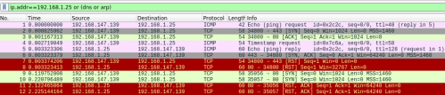

Local Area Network
Local Area Network
If we run a scan in a local network, nmap perform few more operations before performing the scan: ARP ping scan, DNS resolution of the target. nmap does these operations because is the faster way to discover live host in a local area network.
If Nmap was invoked as root(UID 0), it first checks if the target IP address to be scanned is on the
same subnet as the machine running Nmap. If it is, Nmap sends an ARP request and waits for an ARP response. If it gets an ARP response from the address on the same subnet, Nmap knows that the given address is in use.
--disable-arp-ping or
--send-ip →
For machines on a
local Ethernet network, these options tells Nmap to send IP level packets (rather than raw ethernet) even though it is a local network. ARP scanning will still be performed because Nmap needs MAC addresses to further scan target hosts. Also if this option is pretty fast we do not need it as we already have uncovered the network live hosts in the
Hosts Discovery Phase.
-n → Never do DNS resolution. This is a HOST DISCOVERY option but we can use it with all SCAN TECHNIQUES
When resolving IP addresses to hostnames is not required we can use -n to decrease our scan times, and also help us stay a bit more “under the radar”, as reverse DNS lookups can generate more noise than necessary. This can be useful of external hosts but we do not need here because will take the scan more time to be executed.
"normal scan" with ARP ping scan and DNS resolution enablednmap -sS 192.168.1.25 -d -p80
nmap -sS 192.168.1.25 -d --disable-arp-ping -n -p 80
Now we no more
DNS and
ARP packets in wireshark
{kind=link}
{kind=link}
{kind=link}